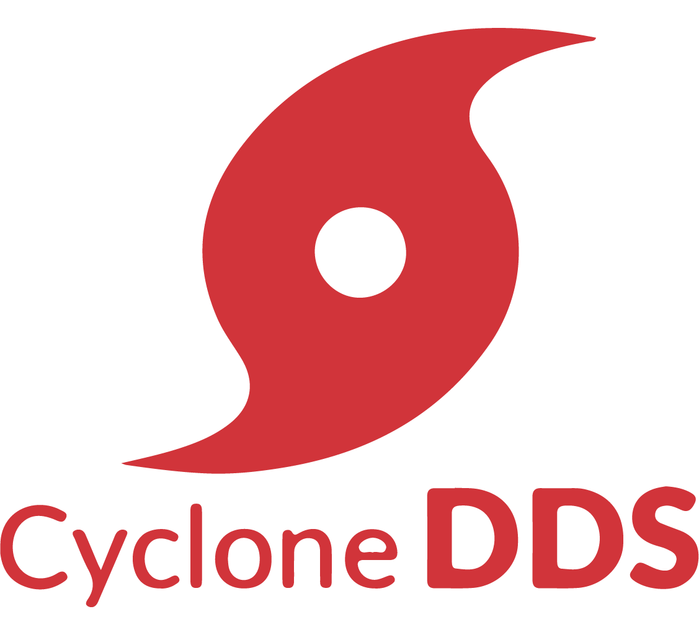

CycloneDDS Getting Started

Eclipse Cyclone DDS is a very performant and robust OMG compliant Data Distribution Service (DDS) implementation. Cyclone DDS core is implemented in C and provides C-APIs to applications. Through its Cyclonedds-cxx package, the ISO/IEC C++ 2003 language binding is supported.
The first chapters detail the installation and build process of Cyclone Core, including the C-APIs. The remaining chapters details how to install the C++ support packages. Short tutorials in C and C++ are detailed to give the reader the first impression of how the DDS technology is used with Cyclone to share data.
Chapters
Installing Eclipse Cyclone DDS
To get started with Cyclone DDS, first install the Cyclone DDS.
Building Cyclone DDS applications
This chapter will give you information on how to build an application in Cyclone DDS.
This chapter introduces the key concept of DDS and details the structural code of a simple system.
Benchmarking Tools for Cyclone
This chapter gives information on how to test your configuration and measure data using the tool provided in Cyclone DDS.
Installing Eclipse Cyclone DDS – CXX
To use Cyclone DDS in C++, you can install the C++ support packages for Cyclone DDS.
Building Eclipse Cyclone DDS-CXX applications
This chapter will give you information on how to build an application using the C++ bindings in Cyclone DDS.
DDS-CXX Hello World Code anatomy
This code anatomy will give you details on how to write an application in C++ using Cyclone DDS C++ bindings.
Appendices:
Installing Eclipse Cyclone DDS
This chapter details the installation process of Cyclone Core.
- System requirements
- Native Installation for Linux and macOS
- Installation with product installer for Linux and macOS
- Native Installation for Windows
- Installation with product installer for Windows
- Test your Installation
- You want to know more about DDS?
- Uninstalling Cyclone DDS
System requirements
At the time of writing this document, Eclipse Cyclone DDS supports Linux, macOS, and Windows and is known to work on FreeRTOS and the solaris-like Openindiana OS.
To build the Cyclone DDS implementation, the following software should be installed on your machine.
- C compiler (most commonly GCC on Linux, C compiler (most commonly GCC on Linux, Visual Studio on Windows, Xcode on macOS);
- GIT version control system;
- CMake, version 3.7 or later;
- OpenSSL, preferably version 1.1 or later if you want to use TLS over TCP. You can explicitly disable it by setting ENABLE_SSL=NO, which is very useful for reducing the footprint or when the FindOpenSSL CMake script gives you trouble;
- Java JDK, version 8 or later, e.g., OpenJDK;
- Apache Maven, version 3.5 or later.
On Ubuntu apt install maven default-jdk should do the trick for getting Java and Maven installed, and the rest should already be there. On Windows, installing chocolatey and choco install git cmake openjdk maven should get you a long way. On macOS, brew install maven cmake and downloading and installing the JDK is easiest.
Currently, the only Java-based component in Cyclone is the IDL preprocessor. The run-time libraries are pure code, so there is no need to have Java available on "target" machines. If desired, it is possible to do a build without Java or Maven installed by defining BUILD_IDLC=NO, but that effectively only gets you the core library. For the current ROS 2 RMW layer, that is sufficient.
Native Installation for Linux and macOS
To obtain the Eclipse Cyclone DDS, do:
$ git clone https://github.com/eclipse-cyclonedds/cyclonedds.git
$ cd cyclonedds
$ mkdir build
Then, depending on whether you like to develop applications using Cyclone DDS or contribute to it, you may follow different procedures.
For application devleopers, go to the next section;
If you want to contribute to Cyclone DDS, refer to the appendix.
For Application Developers
To build and install the required libraries needed to develop your own applications using Cyclone DDS requires a few simple steps.1
$ cd build
$ cmake -DCMAKE_INSTALL_PREFIX=<install-location> ..
$ cmake --build .
To install it after a successful build, do:
$ cmake --build . --target install
This installs step will copy everything to:
<install-location>/lib<install-location>/bin<install-location>/include/ddsc<install-location>/share/CycloneDDS
Depending on the installation location you may need administrator privileges.
At this point, you are ready to use Eclipse Cyclone DDS in your own projects.
Note that the default build type is a release build with debug information included (RelWithDebInfo), which is generally the most convenient type of build to use from applications because of a good mix between performance and still being able to debug things. If you'd rather have a Debug or pure Release build, set CMAKE_BUILD_TYPE accordingly.
1: For example, if you want to install the libraries in the build/install directory, you can do: cmake -DCMAKE_INSTALL_PREFIX=$PWD/install ..
Installation with product installer for Linux and macOS
TBD.
Native Installation for Windows
To obtain the Eclipse Cyclone DDS, do:
$ git clone https://github.com/eclipse-cyclonedds/cyclonedds.git
$ cd cyclonedds
$ mkdir build
Then, depending on whether you like to develop applications using Cyclone DDS or contribute to it, you may follow different procedures.
For application devleopers, go to the next section;
If you want to contribute to Cyclone DDS, refer to the appendix.
For Application Developers
To build and install the required libraries needed to develop your own applications using Cyclone DDS requires a few simple steps.
$ cd build
$ cmake -G "<generator-name>" -DCMAKE_INSTALL_PREFIX=<install-location> ..
$ cmake --build .
Note: You should replace <install-location> with the directory under which you like to install Cyclone DDS and <generator-name> by one of the ways CMake generators offer for generating build files. For example, "Visual Studio 15 2017 Win64" target a 64-bit build using Visual Studio 2017, and the <install-location> can be under the build\install directory. With both the "<generator-name>" and "<install-location>" specified as the example, the command looks like this:
$ cmake -G "Visual Studio 15 2017 Win64" -DCMAKE_INSTALL_PREFIX=install ..
To install it after a successful build, do:
$ cmake --build . --target install
This installs step will copy everything to:
<install-location>/lib<install-location>/bin<install-location>/include/ddsc<install-location>/share/CycloneDDS
Depending on the installation location you may need administrator privileges.
At this point, you are ready to use Eclipse Cyclone DDS in your projects.
Note that the default build type is a release build with debug information included (RelWithDebInfo), which is generally the most convenient type of build to use from applications because of a good mix between performance and still being able to debug things. If you'd rather have a Debug or pure Release build, set CMAKE_BUILD_TYPE accordingly.
Installation with product installer for Windows
The Cyclone DDS also provides a product installer, this is much easier than installing it from GitHub.
To install the Cyclone DDS from the installer, you only need to follow a few simple steps.
First, start up the installer, click 'Next'.

Then, accept the terms, and click'Next'.

Then is to choose whether you want to add CycloneDDS to the system PATH. It is advised to add it to the system PATH so that your application can use the related libraries directly. You can also choose whether to add it for the current user or all users.

Follow up, is to set up the directory to install Cyclone DDS. It is advised NOT to install it under the Program File directory, as it needs administrators' permission to write to the folder.

After the settings from above, you are now ready to install the CycloneDDS.
Wait till the installation is finished.
At this stage your installation of Cyclone DDS core, C-APIs and pre-compiler are complete. The next section describes how to test it.
Test your Installation
To test if your installation and configuration are properly done, you can use the Cyclone DDS ddsperf tool (./ddsperf sanity) or you can use the Hello World example.
To use the ddsperf tool, refer to testing your network configuration.
And the test using the Hello World example will be explained in this section.
Environnement variable updates
On windows, to be able to run Eclipse Cyclone DDS executables, the required libraries (like ddsc.dll) need to be available to the executables. Normally, these libraries are installed in system default locations and it works out-of-the-box. However, if they are not installed in those locations, the library search path has to be changed. This can be achieved by executing the command:1
set PATH=<install-location>\bin;%PATH%
Note: Another way to make the required libraries available to the executables, is to simply copy the required libraries to the executables' directory.
1: The <install-location> is where you install the Cyclone DDS package in the cmake -DCMAKE_INSTALL_PREFIX=<install-location> .. step.
Running the pre-built example
Eclipse Cyclone DDS includes a simple Hello World! application that can be executed to test your installation. The Hello World! application consists of two executables:
- the HelloworldPublisher and,
- the HelloworldSubscriber.
The Hello World! application is located in the <cyclonedds-directory>\build\bin\Debug directory in Windows, and in <cyclonedds-directory>/build/bin in Linux.
To run the example application, you can open two console windows and navigate to the appropriate directory in both console windows. Run the HelloworldSubscriber in one of the console windows by typing the following command:
Windows: HelloworldSubscriber.exe
Linux: ./HelloworldSubscriber
and the HelloworldPublisher in the other console window by typing:
Windows: HelloworldPublisher.exe
Linux: ./HelloworldPublisher
The output HelloworldPublisher is captured in the screenshot below
while the HelloworldSubscriber will be looking like this:
Note that Cyclone's default behavior is to pick up automatically the first network interface card available on your machine and will use it to exchange the hello world message. Assure that your publisher and subscriber applications are on the same network, selecting the right interface card. This is one of the most common issues on machine configurations with multiple network interface cards.
This default behavior can be overridden by updating the property //CycloneDDS/Domain/General/
NetworkInterfaceAddress in a deployment file (e.g cyclonedds.xml) that you have typically had to create and point to it through an OS environment variable named CYCLONEDDS_URI. More information on this topic can be found in the github repository and the configuration section on https://github.com/eclipse-cyclonedds/cyclonedds.
You want to know more about DDS?
The primary source of information is the OMG website at http://www.omg.org, specifically the DDS GettingStartedpage and the DDS specificationitself.
Shortly we will be providing a
1. Tutorial document
2. API reference manual
3. Deployment Guide, for now, you can refer to https://github.com/eclipse-cyclonedds/cyclonedds/blob/master/docs/manual/options.md
Uninstalling Cyclone DDS
There are different ways to uninstall Cyclone DDS, depending on the platform and the ways you installed it.
If you installed Cyclone DDS through github, refer to Uninstallation for Native Installation.
If you installed Cyclone DDS via product installer, refer to Uninstallation for the product installer
Uninstallation for Native Installation
You can manually remove the install and build directory. In Linux and macOS, do:
$ rm -rf *
under the install or build directory.
Uninstallation for the product installer
If your installed the Cyclone DDS in Windows, refer to uninstallation in Windows
If your installed the Cyclone DDS in Linux/macOS, refer to uninstallation in Linux and macOS
Windows
On Windows, to uninstall the Cyclone DDS you can either do it from the windows application control panned (Programs and Features in Control Panel) or using the product installer; in this case, start-up the Cyclone DDS product installer again, and select 'Remove'.

Linux and macOS
TBD.
Building Cyclone DDS applications
This chapter will give you information on how to build an application in Cyclone DDS.
Building Your First Example
To test the complete workflow of building a DDS based application a simple Hello World! is used. Although this application does not reveal all the power of building a data-centric application, it has the merit to introduce you to the basic steps to build a DDS application.
This chapter focuses on building this example, without analyzing the source code, which will be the subject of the next chapter.
The procedure used to build the Hello World! example can also be used for building your own applications.
On Linux, if you have not specified an installation directory, it is advised to copy the Cyclone DDS examples to your preferred directory. Otherwise, you can find them in your <install-location> directory as mentioned in the previous chapter.
Six files are available under the Hello World! root directory to support building the example. And for this chapter, we mainly describe the CMakeLists.txt, HelloWorldData.idl, publisher.c, and subscriber.c.
Building the HelloWorld! application with CMake
In the previous sections, building the Hello World! example is done by default during the Cyclone build process. However, the Hello World! example can also be build using the CMake tool, although you can obviously build with your native compilers and preferred toolchains.
CMake is an open-source, cross-platform family of tools designed to build, test, and package software. It is used to control the software compilation process using simple platform and compiler independent configuration files, and generate native makefiles, projects, and workspaces of your development environment. CMake's main strength is build portability. The same CMake input files will build with GNU make, Visual studio 6,7,8 IDEs, Borland make, nmake, and XCode, etc...
Another advantage of CMake is building out-of-source. It simply works out-of-the-box. There are two important reasons to choose this:
- Easy cleanup (no cluttering the source tree). Simply remove the build directory if you want to start from scratch.
- Multiple build targets. It's possible to have up-to-date Debug and Release targets, without having to recompile the entire tree. For systems that do cross-platform compilation, it is easy to have up-to-date builds for the host and targetplatform.
There are a few other benefits to CMake, but that is out of the scope of this document.
In order to use CMake you need to provide a CMakeLists.txt. A sample CMakeList file can be found at <install-location>/share/CycloneDDS/examples/helloworld/
The content of the CMakeLists.txt is illustrated below:
cmake_minimum_required(VERSION 3.5)
if (NOT TARGET CycloneDDS::ddsc)
# Find the CycloneDDS package. If it is not in a default location, try
# finding it relative to the example where it most likely resides.
find_package(CycloneDDS REQUIRED PATHS
"${CMAKE_SOURCE_DIR}/../../")
endif()
# This is a convenience function, provided by the CycloneDDS package,
# that will supply a library target related the the given idl file.
# In short, it takes the idl file, generates the source files with
# the proper data types and compiles them into a library.
idlc_generate(HelloWorldData_lib "HelloWorldData.idl")
# Both executables have only one related source file.
add_executable(HelloworldPublisher publisher.c)
add_executable(HelloworldSubscriber subscriber.c)
# Both executables need to be linked to the idl data type library and
# the ddsc API library.
target_link_libraries(HelloworldPublisher HelloWorldData_lib CycloneDDS::ddsc)
target_link_libraries(HelloworldSubscriber HelloWorldData_lib CycloneDDS::ddsc)
To build a Cyclone based application you need to link your business code with:
-
the
ddsclibrary that contains the DDS API that the application needs. -
the helper functions and structures that represent your datatypes. These helpers are generated by the Cyclone pre-compiler IDL can be accessed through the CMake (
idlc_generate) call that takes as input the idl file (e.gHelloWorld.idl) and package the datatyped helpers in a library (e.gHelloWorldData_lib).
The idlc_generate call makes use of the DDS IDLC-compiler how generated the helpers' functions and structures.
This process is depicted in the process below:

The cyclone-based application executable (e.g HelloworldPublisher) will be built with the Cmake target_link_libraries() call. This call combines the ddsc lib, the datatype helper lib, and the application code lib.
Note that CMake will try to find the CycloneDDS CMake package in the default location, two levels above the current source directory. Every path and dependencies will be automatically set. CMake will look in the default locations for the code Cyclone DDS package.
Building the Hello World! Example
Now that CMakeLists.txt file is completed the build process can start.
To build the example, depending on the different platform you use, refer to building the example on Linux or on Windows.
on Linux
It is a good practice to build examples or applications out-of-source by creating a build directory in the cyclonedds/build/install/share/CycloneDDS/examples/helloworld directory.
Configure the build environment:
$ mkdir build
$ cd build
$ cmake ../
CMake will use the CMakeLists.txt in the helloworld directory to create makefiles that fit the native platform.
The real build process of the applications (HelloworldPublisher and HelloworldSubscriber in this case) can start:
cmake --build .
The resulting Publisher and Subscriber applications can be found in examples/helloworld/build.
The Hello World! example can now be executed, as described in Test your installation of the previous chapter.
on Windows
Generally speaking, CMake does a good job at guessing which generator to use, but some such as windows require that you supply a specific generator.
For example, only 64-bit libraries are shipped for Windows, by default CMake will generate a 32-bit project, resulting in linker errors. When generating a Visual Studio project and want to generate a b4bit build please append Win64 to the generator description.
The example below shows how to generate a Visual Studio 2015 project with a 64 bit build.
cmake -G "Visual Studio 14 2015 Win64" ..
Note: CMake generators can also create IDE environments. For instance, the "Visual Studio 14 2015 Win64" will generate a Visual Studio solution file. Other IDE's are also possible, like Eclipse IDE.
CMake will use the CMakeLists.txt in the helloworld directory to create makefiles that fit the native platform.
The real build process of the applications can start:
cmake --build .
If you want to generate a Release build do:
cmake --build . --config "Release"
The resulting Publisher and Subscriber applications can be found in examples\helloworld\build\Release.
The Hello World! example can now be executed, like described in Test your installation, using the binaries that were just built.
Hello World!, Code anatomy
The previous chapter described the installation process that built implicitly or explicitly the C Hello World! Example.
This chapter starts by introducing the key concept of DDS and details the structural code of a simple system made by an application that publishes keyed messages and another one that subscribes and reads such data. Each message represents a data object that is uniquely identified with a unique key and a payload.
- Data-Centric Architecture
- Keys steps to build the Hello World! application
- The Hello World! Business Logic
Data-Centric Architecture
In a Service-centric architecture, to interact, applications need to know the interfaces to each other to share data, share events, share commands, or replies. These interfaces are modeled as sets of operations and functions that are managed in centralized repositories. This kind of architecture creates unnecessarily dependencies that ends-up creating a tightly coupled system. The centralized interface repositories are usually seen as a single point of failure.
In a Data-centric architecture, your design focuses on the data each application produces and decides to share rather than on the Interfaces' operations and the internal processing that produced them.
A Data-centric architecture creates therefore a decoupled system that focuses on the data and applications states' that need to be shared rather than the applications' details. In a data-centric system, data and their associated quality of services are the only contract that bounds the applications together. With DDS, the system decoupling is bi-dimensional, in Space and in Time.
Space-decoupling drives from the fact that applications do not need to, neither know the identity of the Data produced (or consumers) nor their logical or their physical location in the network. Under the hood, DDS runs a Zero-configuration, interoperable discovery protocol that searches matching Data Readers and Data Writes that are interested by the same data topic.
Time-decoupling derives from the fact that, fundamentally, the nature of the communication is asynchronous. Data Producers and Data Consumers, known respectively, as Data Writers, and Data Readers are not forced to be active and connected at the same time to share data. In this scenario, the DDS middleware can handle and manage data on behalf of the late joining Data Readers applications and delivered it when they join the system.
Time and space decoupling gives applications the freedom to be plugged or unplugged in the system at any time, from anywhere, in any order. Thiskeeps the complexity and administration of a data-centric architecture relatively low when adding more and more data Readers and data Writers applications.
Keys steps to build the Hello World! application
The Hello World! example has a very simple 'data layer' with a data model made of one data type Msg that represents keyed messages (c,f next subsection).
To exchange data, applications' business logic needs with Cyclone DDS to:
- Declare its participation and involvement in a DDS domain. A DDS domain is an administrative boundary that defines, scopes, and gathers all the DDS applications, data, and infrastructure that needs to interconnect together by share the same data space. Each DDS domain has a unique identifier. Applications declare their participation within a DDS domain by creating a Domain Participant entity.
- Create a Data topic that has the data type described in a data model. The data types define the structure of the Topic. The Topic is therefore an association between the topic's name and a datatype. QoSs can be optionally added to this association. The concept Topic therefore discriminates and categorizes the data in logical classes and streams.
- Create the Data Readers and Writers entities that are specific to the topic. Applications may want to change the default QoSs. In the Hello world! example, the
ReliabilityQoSis changed from its default value (Best-effort) toReliable. - Once the previous DDS computational entities are in place, the application logic can start writing or reading the data.
At the application level, readers and writers do not need to be aware of each other. The reading application, hereby calls Subscriber polls the data reader periodically, until a publishing application, hereby called Publisher the required data into the shared topic, namely HelloWorldData_Msg.
The data type is described using the OMG IDL Languagelocated in HelloWorldData.idl file. Such IDL file will be seen as the Data Model of our example.
This data model will be preprocessed and compiled by Cyclone-DDS IDL-Compiler to generate a C representation of the data as described in Chapter 2. These generated source and header files will be used by the HelloworldSubscriber.c and HelloworldPublishe.c programs to share the Hello World! Message instance and sample.
Hello World! IDL
The HelloWorld data type is described in a language independent way and stored in the HelloWorldData.idl file:
module HelloWorldData
{
struct Msg
{
long userID;
string message;
};
#pragma keylist Msg userID
};
A subset of the OMG Interface Definition Language (IDL) is used as DDS data definition language. In our simple example, the HellowWorld data model is made of one module HelloWorldData. A module can be seen as a namespace where data with interrelated semantic is represented together in the same logical set.
The structMsg is the actual data type that shapes the data used to build Topics. As already mentioned, a topic is basically an association between a data type and a string name. The topic name is not defined in the IDL file, but it is defined by the application business logic, at runtime.
In our simplistic case, the data type Msg contains two fields: userID and message payload. The userID is used as a unique identification of each message instance. This is done using the #pragma keylist <datatype> macro.
The Cyclone DDS IDL compiler translates the IDL datatype in a C struct with a name made of the<ModuleName>_<DataTypeName> .
typedef struct HelloWorldData_Msg
{
int32_t userID;
char * message;
} HelloWorldData_Msg;
Note that when translated into a different programming language, the data will have a different representation that is specific to the target language. For instance, as shown in chapter 7, in C++ the Helloworld data type will be represented by a C++ class. This is the advantage of using a neutral language like IDL to describe the data model.It can be translated into different languages that can be shared between different applications written in different programming languages.
The IDL compiler generated files
In the current version of Cyclone DDS the IDL complier is a java application org.eclipse.cyclonedds.compilers.Idlc packaged in in idlc-jar-with-dependencies.jar that takes an input the IDL file.
java -classpath "<install-location>/lib/cmake/CycloneDDS/idlc/idlc-jar-with-dependencies.jar" org.eclipse.cyclonedds.compilers.Idlc HelloWorldData.idl
Cyclone DDS provides platform specific utilities to facilitate the data model processing:
On Windows : Use the HelloWorldType project within the HelloWorld solution.
On Linux/MacOS : Use The make datatype command.
This results in new HelloWorldData.c and HelloWorldData.h files that need to be compiled and their associated object file linked with the Hello World! publisher and subscriber application business logic. When using the Cyclone provided CMake project, this step is done automatically.
As described earlier, the IDL compiler generates one source and one header files. The header file (HelloWorldData.h) contains the data type of the messages that are shared. While the source file has no direct use from the application developer's perspective.
HelloWorldData.h needs to be included by the application code as it contains the actual message type and contains helper macros to allocate and free memory space for the HelloWorldData_MSG type.
typedef struct HelloWorldData_Msg
{
int32_t userID;
char * message;
} HelloWorldData_Msg;
HelloWorldData_Msg_alloc()
HelloWorldData_Msg_free(d,o)
The header file contains an extern variable that describes the data type to the DDS middleware as well. This variable needs to be used by the application when creating the topic.
HelloWorldData_Msg_desc
The Hello World! Business Logic
Apart from the HelloWorldData.h/c generated files, the Hello World! example also contains two application-level source files (subscriber.c and publisher.c), containing the business logic.
Hello World! Subscriber Source Code
The Subscriber.c mainly contains the statements to wait for a Hello World! message and reads it when it receives it.
Not that, the Cyclone DDS read operation sematic keeps the data sample in the Data Reader cache.
Subscriber application basically implements the previous steps defined in section 3.2.
1 #include "ddsc/dds.h"
2 #include "HelloWorldData.h"
3 #include <stdio.h>
4 #include <string.h>
5 #include <stdlib.h>
6
7 /* An array of one message (aka sample in dds terms) will be used. */
8 #define MAX_SAMPLES 1
9
10 int main (int argc, char ** argv)
11 {
12 dds_entity_t participant;
13 dds_entity_t topic;
14 dds_entity_t reader;
15 HelloWorldData_Msg *msg;
16 void *samples[MAX_SAMPLES];
17 dds_sample_info_t infos[MAX_SAMPLES];
18 dds_return_t ret;
19 dds_qos_t *qos;
20 (void)argc;
21 (void)argv;
22
23 /* Create a Participant. */
24 participant = dds_create_participant (DDS_DOMAIN_DEFAULT, NULL, NULL);
25 DDS_ERR_CHECK (participant, DDS_CHECK_REPORT | DDS_CHECK_EXIT);
26
27 /* Create a Topic. */
28 topic = dds_create_topic (participant, &HelloWorldData_Msg_desc,
29 "HelloWorldData_Msg", NULL, NULL);
30 DDS_ERR_CHECK (topic, DDS_CHECK_REPORT | DDS_CHECK_EXIT);
31
32 /* Create a reliable Reader. */
33 qos = dds_create_qos ();
34 dds_qset_reliability (qos, DDS_RELIABILITY_RELIABLE, DDS_SECS (10));
35 reader = dds_create_reader (participant, topic, qos, NULL);
36 DDS_ERR_CHECK (reader, DDS_CHECK_REPORT | DDS_CHECK_EXIT);
37 dds_delete_qos(qos);
38
39 printf ("\n=== [Subscriber] Waiting for a sample ...\n");
40
41 /* Initialize sample buffer, by pointing the void pointer within
42 * the buffer array to a valid sample memory location. */
43 samples[0] = HelloWorldData_Msg alloc ();
44
45 /* Poll until data has been read. */
46 while (true)
47 {
48 /* Do the actual read.
49 * The return value contains the number of read samples. */
50 ret = dds_read (reader, samples, infos, MAX_SAMPLES, MAX_SAMPLES);
51 DDS_ERR_CHECK (ret, DDS_CHECK_REPORT | DDS_CHECK_EXIT);
52
53 /* Check if we read some data and it is valid. */
54 if ((ret > 0) && (infos[0].valid_data))
55 {
56 /* Print Message. */
57 msg = (HelloWorldData_Msg*) samples[0];
58 printf ("=== [Subscriber] Received : ");
59 printf ("Message (%d, %s)\n", msg->userID, msg->message);
60 break;
61 }
62 else
63 {
64 /* Polling sleep. */
65 dds_sleepfor (DDS_MSECS (20));
66 }
67 }
68
69 /* Free the data location. */
70 HelloWorldData_Msg_free (samples[0], DDS_FREE_ALL);
71
72 /* Deleting the participant will delete all its children recursively as well. */
73 ret = dds_delete (participant);
74 DDS_ERR_CHECK (ret, DDS_CHECK_REPORT | DDS_CHECK_EXIT);
75
76 return EXIT_SUCCESS;
77 }
Within the subscriber code, we will be mainly using the DDS API and the HelloWorldData_Msg type. Therefore, the following header files need to be included:
- The dds.h file give access to the DDS APIs ,
- The HelloWorldData.h is specific to the data type defined in the IDL as explained earlier.
#include "ddsc/dds.h"
#include "HelloWorldData.h"
With Cyclone DDS, at least three dds entities are needed to build a minimalistic application, the domain participant, the topic, and the reader. A DDS Subscriber entity is implicitly created by Cyclone DDS. If needed this behavior can be overridden.
dds_entity_t participant;
dds_entity_t topic;
dds_entity_t reader;
To handle the data. some buffers are declared and created:
HelloWorldData_Msg *msg;
void *samples[MAX_SAMPLES];
dds_sample_info_t info[MAX_SAMPLES];
As the read() operation may return more than one data sample (in the event that several publishing applications are started simultaneously to write different message instances), an array of samples is therefore needed.
In Cyclone DDS data and metadata are propagated together. The dds_sample_info array needs, therefore, to be declared to handle the metadata.
The dds participant is always attached to a specific dds domain. In the Hello World! example, it is part of the Default_Domain, the one specified in the xml deployment file (see section 1.6 for more details).
participant = dds_create_participant (DDS_DOMAIN_DEFAULT, NULL, NULL);
The next step is to create the topic witha given name. Topics with the same data type description and with different names are considered different topics. This means that readers or writers created for a given topic will not interfere with readers or writers created with another topic even though have the same data type.
topic = dds_create_topic (participant, &HelloWorldData_Msg_desc, "HelloWorldData_Msg", NULL, NULL);
Once the topic is created, we can create a data reader and attach to it.
dds_qos_t *qos = dds_create_qos ();
dds_qset_reliability (qos, DDS_RELIABILITY_RELIABLE, DDS_SECS (10));
reader = dds_create_reader (participant, topic, qos, NULL);
dds_delete_qos(qos);
The read operation expects an array of pointers to a valid memory location. This means the samples array needs initialization by pointing the void pointer within the buffer array to a valid sample memory location.
As in our example, we have an array of one element (#define MAX_SAMPLES 1.) we only need to allocate memory for one HelloWorldData_Msg.
samples[0] = HelloWorldData_Msg_alloc ();
At this stage, we can attempt to read data by going into a polling loop that will regularly scrutinize and examine the arrival of a message.
ret = dds_read (reader, samples, info, MAX_SAMPLES, MAX_SAMPLES);
The dds_read operation returns the number of samples equal to the parameter MAX_SAMPLE. If that number exceeds 0 that means data arrived in the reader's cache.
The Sample_info (info) structure will tell whether the data we are reading is Valid or Invalid. Valid data means that it contains the payload provided by the publishing application. Invalid data means, that we are rather reading the DDS state of data Instance. The state of a data instance can be for instance DISPOSED by the writer or it is NOT_ALIVE anymore, which could happen for instance the publisher application terminates while the subscriber is still active. In this case, the sample will not be considered as Valid, and its sample info[].Valid_data field will be False.
if ((ret > 0) && (info[0].valid_data))
If data has been read, then we can cast the void pointer to the actual message data type and display the contents.
msg = (HelloWorldData_Msg*) samples[0];
printf ("=== [Subscriber] Received : ");
printf ("Message (%d, %s)\n", msg->userID, msg->message);
break;
When data is received and the polling loop is stopped, we release the allocated memory and delete the domain participant.
HelloWorldData_Msg_free (samples[0], DDS_FREE_ALL);
dds_delete (participant);
All the entities that are created under the participant, such as the Data Reader and Topic, are recursively deleted.
Hello World! Publisher Source Code
The Publisher.c contains the source that will write a Hello World! Message.
From the DDS perspective, the publisher application code is almost symmetric to the subscriber one, except that you need to create a Data Writer instead of a Data Reader. To assure data is written only when Cyclone DDS discovers at least a matching reader, a synchronization statement is added to the main thread. Synchronizing the main thread till a reader is discovered assures we can start the publisher or subscriber program in any order.
#include "ddsc/dds.h"
#include "HelloWorldData.h"
#include <stdio.h>
#include <stdlib.h>
int main (int argc, char ** argv)
{
dds_entity_t participant;
dds_entity_t topic;
dds_entity_t writer;
dds_return_t ret;
HelloWorldData_Msg msg;
(void)argc;
(void)argv;
/* Create a Participant. */
participant = dds_create_participant (DDS_DOMAIN_DEFAULT, NULL, NULL);
DDS_ERR_CHECK (participant, DDS_CHECK_REPORT | DDS_CHECK_EXIT);
/* Create a Topic. */
topic = dds_create_topic (participant, &HelloWorldData_Msg_desc, "HelloWorldData_Msg", NULL, NULL);
DDS_ERR_CHECK (topic, DDS_CHECK_REPORT | DDS_CHECK_EXIT);
/* Create a Writer. */
writer = dds_create_writer (participant, topic, NULL, NULL);
printf("=== [Publisher] Waiting for a reader to be discovered ...\n");
ret = dds_set_status_mask(writer, DDS_PUBLICATION_MATCHED_STATUS);
DDS_ERR_CHECK (ret, DDS_CHECK_REPORT | DDS_CHECK_EXIT);
while(true)
{
uint32_t status;
ret = dds_get_status_changes (writer, &status);
DDS_ERR_CHECK (ret, DDS_CHECK_REPORT | DDS_CHECK_EXIT);
if (status == DDS_PUBLICATION_MATCHED_STATUS) {
break;
}
/* Polling sleep. */
dds_sleepfor (DDS_MSECS (20));
}
/* Create a message to write. */
msg.userID = 1;
msg.message = "Hello World";
printf ("=== [Publisher] Writing : ");
printf ("Message (%d, %s)\n", msg.userID, msg.message);
ret = dds_write (writer, &msg);
DDS_ERR_CHECK (ret, DDS_CHECK_REPORT | DDS_CHECK_EXIT);
/* Deleting the participant will delete all its children recursively as well. */
ret = dds_delete (participant);
DDS_ERR_CHECK (ret, DDS_CHECK_REPORT | DDS_CHECK_EXIT);
return EXIT_SUCCESS;
}
We will be using the DDS API and the HelloWorldData_Msg type to send data, we therefore need to include the appropriate header files as we did in the subscriber code.
#include "ddsc/dds.h"
#include "HelloWorldData.h"
Like with the reader in subscriber.c, we need a participant and a topic to be able to create a writer. We use also need to use the same topic name as the one specified in the subscriber.c.
dds_entity_t participant;
dds_entity_t topic;
dds_entity_t writer;
participant = dds_create_participant (DDS_DOMAIN_DEFAULT, NULL, NULL);
topic = dds_create_topic (participant, &HelloWorldData_Msg_desc,
"HelloWorldData_Msg", NULL, NULL);
writer = dds_create_writer (participant, topic, NULL, NULL);
When Cyclone DDS discovers readers and writers sharing the same data type and topic name, it connects them without the application involvement. In order to write data only when a Data Readers pops up, a sort of Rendez-vous pattern is required. Such pattern can be implemented using:
- Wait for the publication/subscription matched events, where the Publisher waits and blocks the writing-thread until the appropriate publication matched event is raised, or
- Regularly, polls the publication matching status. This is the preferred option we will implement in this example. The following line of code instructs Cyclone DDS to listen on the DDS_PUBLICATION_MATCHED_STATUS:
dds_set_status_mask(writer, DDS_PUBLICATION_MATCHED_STATUS);
At regular interval we get the status change and for a matching publication. In between, the writing thread sleeps for a time period equal DDS_MSECS
while(true)
{
uint32_t status;
ret = dds_get_status_changes (writer, &status);
DDS_ERR_CHECK(ret, DDS_CHECK_REPORT | DDS_CHECK_EXIT);
if (status == DDS_PUBLICATION_MATCHED_STATUS) {
break;
}
/* Polling sleep. */
dds_sleepfor (DDS_MSECS (20));
}
After this loop, we are sure that a matching reader has been discovered. Now, we commence the writing of the data instance. First, the data must be created and initialized
HelloWorldData_Msg msg;
msg.userID = 1;
msg.message = "Hello World";
Then we can send the data instance of the keyed message.
ret = dds_write (writer, &msg);
When terminating the program, we free the DDS allocated resources by deleting the root entity of the all the others: the domain participant.
ret = dds_delete (participant);
All the underlying entities such as topic, writer … etc are deleted.
Benchmarking Tools for Cyclone
This chapter gives information on how to test your configuration and measure data using the tool provided in Cyclone DDS.
- Introduction
- Testing your network configuration
- Measuring Latency
- Measuring Throughput
- Measuring Throughput and Latency in a mixed scenario
- Additional options
Introduction
Cyclone DDS provides a tool that measures primarily data throughput and latency of the cyclone-based applications within the network or within the same board, namely ddsperf. This tool helps also doing sanity checks to assure your configuration is correctly set up and running. This chapter describes how to use the ddsperf tool and how to read and interpret its outputs and results.
Besides ddsperf, you can also find dedicated examples in the product distribution that measures the dds system throughput and the latency with their associated codebase. You can start from the provided code and customize it to fit your scenario and exact data types. Both _ddsperf_tool and the provided examples perform the benchmarking using sequences of octets with different parameterized sizes.
Testing your network configuration
Once your Cyclone DDS installation is done successfully you may want to test if your network environment is properly set. This can be done either by running the HelloWorld example or by using the ddsperf tool. The Helloworld example sends in one shot a message, whereas the ddsperf tool can send continuously a stream of data at a low frequency rate for sanity checks and can therefore bypass sporadic network issues.
Users that installed Cyclone DDS using the product installer will find the ddsperf tool pre-installed under the directory of <cyclonedds_dir>/bin. Users that installed Cyclone DDS through the native installation process, (from GitHub), can locate the tool in <cyclonedds_dir>/build/bin.
The sanity checks of your dds based system using the ddsperf tool is done as follows
./ddsperf sanity
With the sanity option, one and only one data sample is sent each second (1Hz).
In another terminal, you need to start the ddspef with the Pong mode to echo the data to the first instance of the ddsperf started with the Sanity option.
./ddsperf pong

If the data is not exchanged on the network between the two ddsperf instances, it is likely that cyclone dds did not select the appropriate network card on both machines or a firewall in-between is preventing communication to happen.
Cyclone DDS selects automatically the most available network interface. This can behavior can be overridden by changing the configuration file. (see section 1.6 for more details) .
When running the previous scenario on a local machine, this test assures the loop-back option is enabled.
Measuring Latency
To measure latency between two different applications, you need to run two instances of the ddsperf tool and instruct one of them to endorse the role of a sender that sends a given amount of data (a sequence of octets) at a given rate and the other instance will take the role of receiver that sends back the same amount of data to the sender in a Ping-Pong scenario. The sending action is triggered by the Ping option. The receiving behavior is triggered by the Pong action. The sender measures the roundtrip time and computes the latency as the half of the roundtrip time.
The Ping Pong scenario avoids clock desynchronization issue that might occur between two machines that do not share accurately the same perception of the time in the network.

To differential the two operational modes, the _ddsperf_tool can operate either in a Ping mode or in a Pong mode.
To run this scenario, open 2 terminals (e.g on Linux like OSs), navigate to the directory where ddsperf is located then write the following command in one of the terminals:
./ddsperf ping
Input this command in another terminal:
./ddsperf pong
This basic scenario performs a simple latency test with all the default values. You may customize your test scenario by changing the following options.
In Ping mode you can specify:
-
The Rate and frequency at which data is written. This is specified through the [R[Hz]] option. The default rate is "as fast as possible". In ping mode, it always sends a new ping as soon as it gets a pong;
-
The Size of the data that will be exchanged. This is specified through the [Size S] option. Using the default built-in topic, 12 bytes (an integer key, an integer sequence number, and an empty sequence of bytes). are sent every time. The size is "as small as possible" by default, depending on the size of the topic it defaults to;
-
The Listening mode, which can either be
waitsetbased orListenerCallbacks modes. In the waitset mode the ddsperf application creates a dedicated thread to wait for the data to return back from the receiving instance of ddsperf tool (i.e the instance started with the Pong mode). In the Listener Callback mode, the thread is created by the cyclone dds middleware. The Listener mode is the default.
The Pong mode have only one option:
- the Listening mode [with two possible values,
waitsetorListener]
For instance, if you want to measure local latency between to processes exchanging 2KB at the frequency of 50Hz, you can run the following commands in 2 different terminals:
./ddsperf ping 50Hz 2048 waitset
./ddsperf pong waitset
The output of the ddsperf tool is as shown below:
-
The output for the Ping application indicates mainly:
- The size of the data involved in the test (e.g. 12 bytes)
- The minimum latency (e.g. 78.89 us)
- The maximum latency (e.g. 544,85 us)
- The mean latency (e.g. 118.434 us)
- As well as the latency at 50%, 90% or 99% of the time.
-
The output for the Pong application:
- RSS is the Resident Set Size, it indicates the amount of memory used by the process (e.g. 3.5MB used by the process id 2680);
- VCSW is the number of voluntary switches, it indicates the times when the process waits for input or an event (e.g. 2097 times);
- IVCSW is the number of involuntary switches, it indicates the times when the process is pre-empted or blocked by a mutex (e.g. 6 times);
- The percentage of time spent executing user code and the percentage of time spent executing kernel code in a specific thread (e.g. spent almost 0% of the time executing the user code and 5% executing kernel code in thread "ping").

Measuring Throughput
To measure throughput between two different applications, you need to run at least two instances of the _ddsperf_tool and instruct one of them to endorse the role of a Publisher that sends a given amount of data (a sequence of octets) at a given rate, the other instances will take the role of Subscriber applications. Please note that when your scenario involves only one subscriber, the UDP unicast mode is used. If several subscriber instances are running, the multicast will be automatically used.

Two additional modes are therefore supported:
The Pub mode and the Sub mode.
In the Sub mode the subscriber operates either:
- using the Listener notification mechanism,
- the WaitSet notification mechanism, or
- the Pooling mode. The pooling mode allows the subscriber to cyclically fetch the data from its local cache instead of being notified each time a new set of data is added to the subscriber's cache as it is the case with the other modes.
You can publish data in two ways by publishing each data sample individually or by sending them in a Burst mode.
-
The Rate and frequency at which data is written. This is specified through the [R[Hz]] option. The default rate is "as fast as possible". Which means, in pub mode, instead of trying to reach a certain rate, it just pushes data as hard as it can.
-
The Size of the data that will be exchanged. This is specified through the [Size S] option. The size is "as small as possible" by default, depending on the size of the topic it defaults to.
-
The Burst Size , defines the number of data samples that will be issued together in as a batch. This parameter is defined by the [Burst N] option. The default size for burst is 1. It doesn't make much of a difference when going "as fast as possible", and it only applies to the pub mode.
-
The triggering mode by default is listener for the ping , pong and sub mode.
To run a simple throughput test, you can simply run a pub mode and a sub mode in 2 different terminals without specifying any other options or you can customize it as shown below:
Open two terminals, navigate to the directory where _ddsperf_is located and write the following command:
./ddsperf pub size 1k
And in the other terminal, type in:
./ddsperf -Qrss:1 sub`
This measures the throughput of data samples with 1Kbytes written as fast as possible.
The -Qrss:1 option in sub mode sets the maximum allowed increase in RSS as 1MB. When running the test, if the memory occupies by the process increases by less than 1MB, the test can be successfully run. Otherwise, an error message is printed out at the end of the test.
As the pub in this example only has a size of 1k, the sub will not print out an RSS error message at the end of the test.
The output of the ddsperf tool when measuring throughput is as shown below:
-
The output for the Pub application indicates mainly:
- RSS is the Resident Set Size; it indicates the amount of memory is used by the process (e.g. 6.3MB used by the process id "4026");
- VCSW is the number of voluntary switches, it indicates the times when the process waits for input or an event (e.g. 1054 times);
- IVCSW is the number of involuntary switches, it indicates the times when the process is pre-empted or blocked by a mutex (e.g. 24 times);
- The percentage of time spent executing user code and the percentage of time spent executing kernel code in a specific thread (e.g. spent 34% of the time executing the user code and 11% executing kernel code in thread "pub").

-
The output for the Sub application indicates mainly:
- The size of the data involving in this test (e.g. 1024 bytes, which is the "size 1k" defined in the pub command)
- The total packets received (e.g. 614598);
- The total packets los t (e.g. 0);
- The packets received in 1 second reporting period (e.g. 212648);
- The packets lost in 1 second report period (e.g. 0);
- The number of samples processed by the Sub application in 1s (e.g. 21260 KS/s, with the unit KS/s is 1000 samples per second).
Measuring Throughput and Latency in a mixed scenario
In some scenarios, it might be useful to measure the throughput and latency at the same time.
The ddsperf tool allows you to mix these two scenarios. To address such cases the Ping mode can be combined with the Pub mode.
The [Ping x%] switch combined with the Pub mode allows you to send a fraction of samples x% as if they were used in the Ping mode.
The different modes of the ddsperf tool are summarized in the figure below.

You can get more information for the ddsperf tool by using the [help] option:
./ddsperf help
Additional options
Besides selecting the mode, you can also select the options to specify how to send and receive the data (such as modifying the reliable QoS from Reliable to Best-Effort with the -u option), or how to evaluate or view the data in the _ddsperf_tool.
The options you can select are listed in the ddsperf help menu, as shown below.

Installing Eclipse Cyclone DDS – CXX
Cyclone DDS – CXX is an implementation of the DDS ISO/IEC C++ PSM API, or simply put, a C++ binding for Eclipse Cyclone DDS. It is made of an IDL compiler that generates from IDL data model their C++ representation and artifacts, a software layer that maps some DDS APIs on the Cyclone DDS C APIs and direct access to the cyclone kernel APIs when managing data to lower overhead.

- System requirements
- Native Installation for Linux and macOS
- Installation with product installer for Linux and macOS
- Native Installation for Windows
- Installation with product installer for Windows
- Test your CXX Installation for Native Installation
- Uninstalling Cyclone DDS-CXX
System requirements
At the time of writing this document, Eclipse Cyclone DDS-CXX supports Linux, macOS, and Windows. Cyclone DDS-CXX is known to work on FreeRTOS and the solaris-like Openindiana OS.
To build the Cyclone DDS C++ binding, the following software should be installed on your machine.
- C and C++ compilers (most commonly GCC on Linux, Visual Studio on Windows, Xcode on macOS);
- Git version control system, CMake(version 3.7 or later);
- Eclipse Cyclone DDS;
- CXX IDL compiler.
The installation of Eclipse Cyclone DDS with the C language support has been described in Chapter 1. The CXX IDL compiler is described in this chapter.
Native Installation for Linux and macOS
This section describes how to install the C++ support package for Cyclone through GitHub.
To install the C++ support package, two things are need. One is to have the C++ IDL compiler to compile the C++ program. The other one is to have the C++ bindings for Cyclone DDS, to provide the C++ APIs for Cyclone DDS.
Install CXX IDL compiler
To build the CXX IDL Compiler, the following software should be installed on your machine.
- Git
- CMake, version 3.7 or later.
- Java JDK, version 8 or later, e.g. OpenJDK 11.
- Apache Maven, version 3.5 or later.
The CXX IDL compiler is available on GitHub, it can be obtained by:
$ git clone https://github.com/ADLINK-IST/idlpp-cxx.git
Building
To build the CXX IDL compiler, go into the folder directory and create a "build" folder to keep all the build files.
$ cd idlpp-cxx
$ mkdir build
$ cd build
Then use CMake to build the project.
$ cmake <cmake-config_options> ..
$ cmake --build .
Note: The <cmake-config_options> can be ignored or replaced. A few of the most common options are: -DCMAKE_INSTALL_PREFIX=<install-location> -DCMAKE_BUILD_TYPE=Debug
$ cmake -DCMAKE_BUILD_TYPE=Debug ..
Packaging
To package the build, the config and build steps are be a bit different from the build process described above.
When packing, the -DCMAKE_INSTALL_PREFIX=<install-location>1 option should be added to the configuration, and the <install-location> be the directory which the IDL compiler will be installed.
During the build step, you have to specify that you want to build the install target as well.
The build process be like:
$ mkdir build
$ cd build
$ cmake -DCMAKE_INSTALL_PREFIX=<idlpp-cxx-install-location> ..
$ cmake --build . --target install
After the build, required files will be copied to:
<idlpp-cxx-install-location>/lib<idlpp-cxx-install-location>/share
Then the <install-location> directory can be used to create the packages(s).
$ cpack
This will generate the packages corresponding to the target.
1: For example, the package can be installed under the build directory, and the command can be -DCMAKE_INSTALL_PREFIX=$PWD/install ..
Install Eclipse Cyclone DDS CXX
With Eclipse Cyclone DDS and CXX IDL compiler ready, you are now ready to install Cyclone DDS CXX.
To obtain the C++ binding for Cyclone DDS, do:
$ git clone https://github.com/eclipse-cyclonedds/cyclonedds-cxx.git
Building
To build the Cyclone DDS CXX, go into the folder directory and create a "build" folder to keep all the build files.
$ cd cyclonedds-cxx
$ mkdir build
Then, depending on whether you want to develop applications using Cyclone DDS CXX or contribute to it, you may follow different procedures.
For application devleopers, go to the next section;
If you want to contribute to Cyclone DDS, refer to the appendix.
For Application Developers
To build and install the required libraries needed to develop your applications using the C++ binding for Cyclone DDS, do:1
$ cd build
$ cmake -DCMAKE_INSTALL_PREFIX=<cyclonedds-cxx-install-location> -DCMAKE_PREFIX_PATH="<idlpp-cxx-install-location>;<cyclonedds-install-location>" -DBUILD_EXAMPLES=On ..
$ cmake --build .
The <cyclonedds-cxx-install-location> is where you like to install the C++ binding for Cyclone DDS.
To install the package after a successful build, do:
$ cmake --build . --target install
This will copy everything to:
<cyclonedds-cxx-install-location>/lib<cyclonedds-cxx-install-location>/bin<cyclonedds-cxx-install-location>/include/ddsc<cyclonedds-cxx-install-location>/share/CycloneDDS-CXX
Depending on the installation location you may need administrator privileges.
At this point, you are ready to use Eclipse Cyclone DDS-CXX in your projects.
Note that the default build type is a release build with debug information included (RelWithDebInfo), which is generally the most convenient type of build to use from applications because of a good mix between performance and still being able to debug things. If you'd rather have a Debug or pure Release build, set CMAKE_BUILD_TYPE accordingly.
1: For example, the <idlpp-cxx-install-location> and <cyclonedds-install-location> can be ${HOME}/idlpp-cxx/build/install and ${HOME}/cyclonedds/build/install.
If the package still cannot be found after specify the path, try removing everything from the build directory and build it again.
Installation with product installer for Linux and macOS
TBD.
Native Installation for Windows
To install the C++ support package, two things are need. One is to have the C++ IDL compiler to compile the C++ program. The other one is to have the C++ bindings for Cyclone DDS, to provide the C++ APIs for Cyclone DDS.
Install CXX IDL compiler
To build the CXX IDL Compiler, the following software should be installed on your machine.
- Git
- CMake, version 3.7 or later.
- Java JDK, version 8 or later, e.g., OpenJDK 11.
- Apache Maven, version 3.5 or later.
Building
The CXX IDL compiler is available on GitHub, to obtain the CXX IDL, do:
$ git clone https://github.com/ADLINK-IST/idlpp-cxx.git
And the build process is:
$ cd idlpp-cxx
$ mkdir build
$ cd build
$ cmake -G "<generator-name>" <cmake-config_options> ..
$ cmake --build .
Note: The <generator-name> can be used to specify the CMake generator used to generate the build files. For example, "Visual studio 15 2017 Win64" target a 64-bit build using Visual Studio 2017.
Note: The <cmake-config_options> can be ignored or replaced. A few of the most common options are: -DCMAKE_INSTALL_PREFIX=<install-location> -DCMAKE_BUILD_TYPE=Debug
With both "<generator-name>" <cmake-config_options> specified, the command look like:
$ cmake -G “Visual Studio 15 2017 Win64” -DCMAKE_BUILD_TYPE=Debug ..
Packaging
If you want to package the product, then the config and build step will be a bit different than the build process described above.
When packing, the -DCMAKE_INSTALL_PREFIX=<install-location>1 option should be added to the configuration, and the <install-location> be the directory which the IDL compiler is installed.
During the build step, you have to specify that you want to build the install target as well.
The build process should be like:
$ mkdir build
$ cd build
$ cmake -DCMAKE_INSTALL_PREFIX=<idlpp-cxx-install-location> ..
$ cmake -G "<generator-name>" <cmake-config_options> ..
$ cmake --build . --target install
After the build, required files be copied to:
<idlpp-cxx-install-location>/lib<idlpp-cxx-install-location>/share
1: For example, the package can be installed under the build directory in a folder named “install”, and the command can be -DCMAKE_INSTALL_PREFIX=install ..
Install Eclipse Cyclone DDS CXX
With Eclipse Cyclone DDS and CXX IDL compiler ready, you are now ready to install Cyclone DDSCXX.
To obtain the C++ binding for Cyclone DDS, do:
$ git clone https://github.com/eclipse-cyclonedds/cyclonedds-cxx.git
Building
To build the Cyclone DDS CXX, go into the folder directory and create a "build" folder to keep all the build files.
$ cd cyclonedds-cxx
$ mkdir build
Then, depending on whether you want to develop applications using Cyclone DDS-CXX or contribute to it, you may follow different procedures.
For application devleopers, go to the next section;
If you want to contribute to Cyclone DDS, refer to the appendix.
For Application Developers
To build and install the required libraries needed to develop your applications using the C++ binding for Cyclone DDS, do:1
$ cd build
$ cmake -G "<generator-name>" -DCMAKE_INSTALL_PREFIX=<cyclonedds-cxx-install-location> -DCMAKE_PREFIX_PATH="<idlpp-cxx-install-location>;<cyclonedds-install-location>" -DBUILD_EXAMPLES=On ..
$ cmake --build .
Note: <generator-name> should be replaced by one of the ways CMake generators offer for generating build files. For example, "Visual Studio 16 2019" target a 64-bit build using Visual Studio 2019. And the command should be like:
$ cmake -G "Visual Studio 16 2019" -DCMAKE_INSTALL_PREFIX=<cyclonedds-cxx-install-location> -DCMAKE_PREFIX_PATH="<idlpp-cxx-install-location>;<cyclonedds-install-location>" -DBUILD_EXAMPLES=On ..
To install it after a successful build, do:
$ cmake --build . --target install
This will copy everything to:
<cyclonedds-cxx-install-location>/lib<cyclonedds-cxx-install-location>/bin<cyclonedds-cxx-install-location>/include/ddsc<cyclonedds-cxx-install-location>/share/CycloneDDS-CXX
Depending on the installation location you may need administrator privileges.
At this point, you are ready to use Eclipse Cyclone DDS-CXX in your projects.
Note that the default build type is a release build with debug information included (RelWithDebInfo), which is generally the most convenient type of build to use from applications because of a good mix between performance and still being able to debug things. If you prefer have a Debug or pure Release build, set CMAKE_BUILD_TYPE accordingly.
1: For example, the <idlpp-cxx-install-location> and <cyclonedds-install-location> can be C:\idlpp-cxx\build\install and C:\cyclonedds\build\install
If the package still can not be found after specify the path, try removing everything from the build directory and build it again.
Installation with product installer for Windows
The Cyclone DDS-CXX also provides a product installer, this is much easier than installing it from GitHub.
To install the Cyclone DDS-CXX from the installer, you only need to follow a few simple steps.
First, start up the installer, click 'Next'.

Then, agree to the terms, and click 'Next'.
Choose whether you would like to add CycloneDDS-CXX to the system PATH. It is advised to add it to the system PATH . You can also choose whether you would like to add it for the current user or for all users.

Select the directory in which you would like to install Cyclone DDS-CXX. Avoid installing it under the Program File directory, as it requires administrator privileges.
After the settings from above, you are now ready to install the CycloneDDS-CXX.
Wait till the installation is finished.
Now the installation for Cyclone DDS is complete, to build an application using Cyclone DDS, you can check how to build your first Cyclone DDS-CXX example.
Test your CXX Installation for Native Installation
To test if the C++ support packages are installed correctly, a simple Hello World example is provided.
Environnement variable updates
To be able to run an Eclipse Cyclone DDSCXX application, the required libraries (such as ddsc.dll and ddscxx.dll) need to be available in the executable path. These libraries should be installed in the system default location. However, if they are not installed there, the library search path has to be updated accordingly. On Linux use the command:
Set PATH=<cyclonedds-installation-location>\bin;<cyclonedds-cxx-installation-location>\bin
Note: Another way to make the required libraries available to the executables, is to simply copy the required libraries to the executables' directory.
Running the pre-built example
A simple Hello World application is included in the Eclipse Cyclone DDSCXX, it can be used to test the installation. The Hello World application is located in the <cyclonedds-cxx-directory>\build\bin\Debug in Windows, and in <cyclone-cxx-directory>/build/bin in Linux.
To run the example application, open two console windows, and navigate to the appropriate directory as mentioned above. Run the ddscxxHelloworldPublisher in one of the console windows by typing the following command:
Windows: ddscxxHelloworldPublisher.exe
Linux: ./ddscxxHelloworldPublisher
And run the ddscxxHelloworldSubscriber in the other console window with:
Windows: ddscxxHelloworldSubscriber.exe
Linux: ./ddscxxHelloworldSubscriber.exe
The output for the ddscxxHelloworldPublihser should look like:

The output for the ddscxxHelloworldSubscriber should look like:
For more information on how to build this application on your own and the code which has been used, refer to the Hello World Chapter.
Uninstalling Cyclone DDS-CXX
If you installed Cyclone DDS through github, refer to Uninstallation for Native Installation.
If you installed Cyclone DDS via product installer, refer to Uninstallation for the product installer
Uninstallation for Native Installation
At this stage, you can manually remove the install and build directory. Or in Linux and macOS, do:
$ rm -rf *
under the install or build directory.
Uninstallation for package installation
If your installed the Cyclone DDS CXX in Windows, refer to uninstallation in Windows
If your installed the Cyclone DDS CXX in Linux/macOS, refer to uninstallation in Linux and macOS
Windows
To uninstall the Cyclone DDS-CXX you can either do it from Programs and Features in Control Panel or use the Cyclone DDS-CXX installer. In the latest case start Cyclone DDS-CXX package , and choose 'Remove'.

Linux and macOS
TBD.
Building Eclipse Cyclone DDS-CXX applications
This chapter will give you information on how to build an application using the C++ bindings in Cyclone DDS.
Building Your First CycloneDDS-CXX example
To test your installation, the Hello World can be used. The code of this application will be detailed in the next chapter.
The DDS-CXX Hello World example can be found in the <cyclonedds-cxx-install-location>/share/CycloneDDS-CXX/helloworld directory for both Linux and Windows. This chapter describes build the example build process using the CMAKE.
Building a CycloneDDS-CXX application with CMake
The CMake build file for the DDS-CXX Hello World example is located under the helloworld directory (CMakeLists.txt).
The content of the CMakeLists.txt is illustrated below:
project(helloworld LANGUAGES C CXX)
cmake_minimum_required(VERSION 3.5)
find_package(Idlpp-cxx REQUIRED)
if (NOT TARGET CycloneDDS-CXX::ddscxx)
find_package(CycloneDDS-CXX REQUIRED)
endif()
# Convenience function, provided by the Idlpp-cxx that generates a CMake
# target for the given IDL file. The function calls Idlcpp-cxx to generate
# source files and compiles them into a library.
idl_ddscxx_generate(ddscxxHelloWorldData_lib "HelloWorldData.idl")
add_executable(ddscxxHelloworldPublisher publisher.cpp)
add_executable(ddscxxHelloworldSubscriber subscriber.cpp)
# Link both executables to idl data type library and ddscxx.
target_link_libraries(ddscxxHelloworldPublisher ddscxxHelloWorldData_lib CycloneDDS-CXX::ddscxx)
target_link_libraries(ddscxxHelloworldSubscriber ddscxxHelloWorldData_lib CycloneDDS-CXX::ddscxx)
set_property(TARGET ddscxxHelloworldPublisher PROPERTY CXX_STANDARD 11)
set_property(TARGET ddscxxHelloworldSubscriber PROPERTY CXX_STANDARD 11)
To build a Cyclone DDS CXX based application with CMake, you need to link your application business code with:
-
CycloneDDS-CXXlibraries that contain the DDS-CXX API your application needs. -
The wrapper classes and structures that represent your datatypes and the customized-data writers and readers that can handle these data types. These classes are generated by Cmake statement
idl_ddscxx_generate()that takes as input the idl file, invokes the CXX- IDL compiler and packages the datatype wrapper classes in a library (e.g.ddscxxHelloWorldData_lib).
This process is depicted in the process below:
By setting the property for the applications in Cmake set_property() statement, the applications will be compiled against the C++ 11 standard.
The application executable (ddscxxHellowordPublihser) will be built with the CMake target_link_libraries() statement which links the ddscxx lib, the datatype wrapper classes lib (e.g ddscxxHelloWorldData_lib) and the application code lib.
The CMake tries to find the Idlpp-cxx and the CycloneDDS-CXX CMake package, the details regarding how to locate those packages will be described in the next section. When the packages are found, every path and dependencies are automatically set.
Build the DDS-CXX Hello World Example
To build the example, navigate to the example's directory and create a build folder.
$ mkdir build
$ cd build
Building the DDS-CXX Hello World example on Linux and macOS
To build the DDS-CXX Hello World example, the PREFIX_PATHneeds to be specified, the command be like this:
$ mkdir build
$ cd build
$ cmake -DCMAKE_PREFIX_PATH="<idlpp-cxx-install-location>;<cyclone-install-location>;<cyclonedds-cxx-install-location>" ..
$ cmake –-build .
The DDS-CXX Hello World example application can now be found in the helloworld/builddirectory, use the method in Test your CXX installation to check if the application runs successfully.
Building the DDS-CXX Hello World example on Windows
To build the DDS-CXX Hello World example in Windows, it's likely that you have to specify the generator for CMake. For example, to generate a Visual Studio 2017 project, use the following command:
$ mkdir build
$ cd build
$ cmake -G “Visual Studio 15 2017 Win64” -DCMAKE_PREFIX_PATH=”<idlpp-cxx-install-location>;<cyclone-install-location>;<cyclonedds-cxx-install-location>” ..
CMake will use the CMakeLists.txt in the helloworld directory to create makefiles that fits the native platform.
Subsequently, build the example. It's recommended you provide the config of Visual Studio:
$ cmake -build . –config "Release";
The DDS-CXX Hello World example application can now be found in the helloworld\build\Releasedirectory, use the method in Test your CXX installation to check if the application can run successfully.
Note: If the DDS-CXX Hello World application fails, please check if the path has been set up correctly.
DDS-CXX Hello World Code anatomy
The previous chapter described the installation process that built implicitly or explicitly the C++ Hello World! Example. The key concept of DDS was introduced in Chapter 3.
This chapter starts by introducing the structural code of a simple system made by an application that publishes keyed messages and another one that subscribes and reads such data. Each message represents a data object that is uniquely identified with a key and a payload.
Keys steps to build the Hello World! application
The Hello World! example has a very simple 'data layer' with a data model made of one data type Msg who represents keyed messages (c,f next subsection).
To exchange data, applications' business logic needs with Cyclone DDS to:
- Declare its subscription and involvement into a DDS domain. A DDS domain is an administrative boundary that defines, scopes and gathers all the DDS applications, data, and infrastructure that needs to interconnect and share the same data space. Each DDS domain has a unique identifier. Applications declare their participation within a DDS domain by creating a Domain Participant entity.
- Create a Data topic that has the data type described in the data model. The data types define the structure of the Topic. The Topic is therefore an association between the topic name and datatype. QoSs can be optionally added to this association. A Topic therefore categories the data in logical classes and streams.
- Create at least a Publisher , a Subscriber, and Data Readers and Writers objects that are specific to the topic created earlier. Applications may want to change the default QoSs at this stage. In the Hello world! example, the
ReliabilityQoSis changed from its default value (Best-effort) to Reliable. - Once the previous DDS computational object s are in place, the application logic can start writing or reading the data.
At the application level, readers and writers do not need to be aware of each other. The reading application, hereby designated as application Subscriber polls the data reader periodically, until a writing application, hereby called application Publisher, provides the required data into the shared topic, namely HelloWorldData_Msg.
The data type is described using the OMG IDL Language located in HelloWorldData.idl file. This IDL file will be considered the Data Model of our example.
This data model will be preprocessed and compiled by Cyclone-DDS-CXX IDL-Compiler to generate a CXX representation of the data as described in Chapter 6. These generated source and header files will be used by the HelloworldSubscriber.cpp and HelloworldPublishe.cpp applicationprograms to share the Hello World! Message instance and sample.
HelloWorld IDL
As explained in chapter 3, the benefits of using IDL language to define data is to have a data model that is independent from the programming languages. The HelloWorld.idl IDL file used in chapter 3 can therefore be reused. it will be compiled into to be used within a C++ DDS based applications.
The HelloWorld data type is described in a language independent way and stored in the HelloWorldData.idl file (same as in chapter 3).
module HelloWorldData
{
struct Msg
{
long userID;
string message;
};
#pragma keylist Msg userID
};
A subset of the OMG Interface Definition Language (IDL) is used as DDS data definition language. In our simple example, the HellowWorld data model is made of one module HelloWorldData. A module can be seen as namespace where data with interrelated semantic is represented together in the same logical set.
The struct Msg is the actual data structure that shapes the data used to build the Topics. As already mentioned, a topic is basically an association between a data type and a string name. The topic name is not defined in the IDL file, but it is defined by the application business logic, at runtime.
In our simplistic case, the data type Msg contains two fields: userID and message payload. The userID is used as a unique identification of each message instance. This is done using the #pragma keylist <datatype> macro.
The Cyclone DDS-CXX IDL compiler translates the module name into namespaces and structure name into classes.
It also generates code for public accessor functions for all fields mentioned in the IDL struct, separate public constructors, and a destructor: A default (empty) constructor that recursively invokes the constructors of all fields, a copy-constructor that performs a deep-copy from the existing class, a move-constructor that moves all arguments to its members, the destructor recursively releases all fields. It also generates code for assignment operators that recursively construct all fields based on the parameter class (copy and move versions).
namespace HelloWorldData
{
class Msg OSPL_DDS_FINAL
{
public:
int32_t userID_;
std::string message_;
public:
Msg() :
userID_(0) {}
explicit Msg(
int32_t userID,
const std::string& message) :
userID_(userID),
message_(message) {}
Msg(const Msg &_other) :
userID_(_other.userID_),
message_(_other.message_) {}
#ifdef OSPL_DDS_CXX11
Msg(Msg &&_other) :
userID_(::std::move(_other.userID_)),
message_(::std::move(_other.message_)) {}
Msg& operator=(Msg &&_other)
{
if (this != &_other) {
userID_ = ::std::move(_other.userID_);
message_ = ::std::move(_other.message_);
}
return *this;
}
#endif
Msg& operator=(const Msg &_other)
{
if (this != &_other) {
userID_ = _other.userID_;
message_ = _other.message_;
}
return *this;
}
bool operator==(const Msg& _other) const
{
return userID_ == _other.userID_ &&
message_ == _other.message_;
}
bool operator!=(const Msg& _other) const
{
return !(*this == _other);
}
int32_t userID() const { return this->userID_; }
int32_t& userID() { return this->userID_; }
void userID(int32_t _val_) { this->userID_ = _val_; }
const std::string& message() const { return this->message_; }
std::string& message() { return this->message_; }
void message(const std::string& _val_) { this->message_ = _val_; }
#ifdef OSPL_DDS_CXX11
void message(std::string&& _val_) { this->message_ = _val_; }
#endif
};
}
Note that when translated into a different programming language, the data will have a different representation that is specific to the target language. For instance, as shown in chapter 3, in C the Helloworld data type will be represented by a C structure. This is the advantage of using a neutral language like IDL to describe the data model. It can be translated into different languages that can be shared between different applications written in different programming languages.
The IDL compiler generated files
In the current version of Cyclone DDS-CXX the IDL complier is a java application com.prismtech.lite.compilers.Idlcpp packaged in idlcpp-c-jar-with-dependencies.jar that takes an input the IDL file.
Java -classpath “<idlpp-cxx-install-location>/share/Idlpp-cxx/idlpp/*" com.prismtech.lite.compilers.Idlcpp -idlpp "<idlpp-cxx-install-location>/ share/Idlpp-cxx/idlpp/idlpp" -templates "<idlpp-cxx-install-location>/share/Idlpp-cxx/idlpp/templates" -l isocpp HelloWorldData.idl
Cyclone DDS provides platform specific utilities to facilitate the data model processing:
On Windows : Use The ddscxxHelloWorldData_lib_idl_isocpp_generate project within the HelloWorld solution.
On Linux/MacOS : Use The cmake command.
This will result in new HelloWorldData-cyclone.h, HelloWorldData-cyclone.c, HelloWorldDataSplDcps.h, HelloWorldDataSplDcps.cpp, HelloWorldData_DCPS.hpp, HelloWorldData.h and HelloWorldData.cpp files that needs to be compiled and their associated object file linked with the Hello World! publisher and subscriber application business logic.
When using CMake to build the application, this step is hidden, and will be done automatically. For building with CMake, refer to building the Hello World example.
As described earlier, the IDL compiler generates three source and four header files. HelloWorldData-cyclone.h and HelloWorldData-cyclone.c are intermediate files used by idlpp-CXX compiler, and has no direct use from the application developer's perspective.
HelloWorldData.h and HelloWorldData.cpp files contain the data type of the messages that are shared. HelloWorldDataSplDcps.h & HelloWorldDataSplDcps.cpp files contain the implementations needed by Cyclone DDS to handle the specified datatypes in its database. They also contain the meta-data for all datatypes. HelloWorldData_DCPS.h file convenience file includes all the relevant headers files and API definitions that may be required by an application.
HelloWorldData_DCPS.h needs to be included in the business as it contains the actual message type used by the application when writing or reading data. It also contains helper macros to allocate and free memory space for the HelloWorldData_MSG type.
DDS-CXX Hello World Business Logic
Apart from the HelloWorldData data type files that the DDS-CXX Hello World example uses to send messages, the DDS-CXX Hello World! example also contains two application-level source files (subscriber.cpp and publisher.cpp), containing the business logic.
DDS-CXX Hello World Subscriber Source Code
The Subscriber.cpp file mainly contains the statements to wait for a Hello World message and reads it when it receives it.
Note that, the read sematic keeps the data sample in the Data Reader cache. Subscriber application basically implements the steps defined in section 7.1.
#include <cstdlib>
#include <iostream>
#include <chrono>
#include <thread>
/* Include the C++ DDS API. */
#include "dds/dds.hpp"
/* Include data type and specific traits to be used with the C++ DDS API. */
#include "HelloWorldData_DCPS.hpp"
using namespace org::eclipse::cyclonedds;
int main() {
try {
std::cout << "=== [Subscriber] Create reader." << std::endl;
/* First, a domain participant is needed.
* Create one on the default domain. */
dds::domain::DomainParticipant participant(domain::default_id());
/* To subscribe to something, a topic is needed. */
dds::topic::Topic<HelloWorldData::Msg> topic(participant, "ddscxx_helloworld_example");
/* A reader also needs a subscriber. */
dds::sub::Subscriber subscriber(participant);
/* Now, the reader can be created to subscribe to a HelloWorld message. */
dds::sub::DataReader<HelloWorldData::Msg> reader(subscriber, topic);
/* Poll until a message has been read.
* It isn't really recommended to do this kind wait in a polling loop.
* It's done here just to illustrate the easiest way to get data.
* Please take a look at Listeners and WaitSets for much better
* solutions, albeit somewhat more elaborate ones. */
std::cout << "=== [Subscriber] Wait for message." << std::endl;
bool poll = true;
while (poll) {
/* For this example, the reader will return a set of messages (aka
* Samples). There are other ways of getting samples from reader.
* See the various read() and take() functions that are present. */
dds::sub::LoanedSamples<HelloWorldData::Msg> samples;
/* Try taking samples from the reader. */
samples = reader.take();
/* Are samples read? */
if (samples.length() > 0) {
/* Use an iterator to run over the set of samples. */
dds::sub::LoanedSamples<HelloWorldData::Msg>::const_iterator sample_iter;
for (sample_iter = samples.begin();
sample_iter < samples.end();
++sample_iter) {
/* Get the message and sample information. */
const HelloWorldData::Msg& msg = sample_iter->data();
const dds::sub::SampleInfo& info = sample_iter->info();
/* Sometimes a sample is read, only to indicate a data
* state change (which can be found in the info). If
* that's the case, only the key value of the sample
* is set. The other data parts are not.
* Check if this sample has valid data. */
if (info.valid()) {
std::cout << "=== [Subscriber] Message received:" << std::endl;
std::cout << " userID : " << msg.userID() << std::endl;
std::cout << " Message : \"" << msg.message() << "\"" << std::endl;
/* Only 1 message is expected in this example. */
poll = false;
}
}
} else {
std::this_thread::sleep_for(std::chrono::milliseconds(20));
}
}
}
catch (const dds::core::Exception& e) {
std::cerr << "=== [Subscriber] Exception: " << e.what() << std::endl;
return EXIT_FAILURE;
}
std::cout << "=== [Subscriber] Done." << std::endl;
return EXIT_SUCCESS;
}
Within the subscriber code, we will be mainly using the DDS ISOCPP API and the HelloWorldData::Msg type. Therefore, the following header files need to included:
- The dds.hpp file give access to the DDS APIs,
- The HelloWorldData_DCPS.hpp is specific to the data type defined in the IDL.
#include "dds/dds.hpp"
#include "HelloWorldData_DCPS.hpp"
At least four dds entities are needed, the domain participant, the topic , the subscriber and the reader.
dds::domain::DomainParticipant participant(domain::default_id());
dds::topic::Topic<HelloWorldData::Msg> topic(participant,"ddscxx_helloworld_example");
dds::sub::Subscriber subscriber(participant);
dds::sub::DataReader<HelloWorldData::Msg> reader(subscriber,topic);
The Cyclone DDS-CXX API simplifies and extends how data can be read or taken. To handle the data some LoanedSamples are declared and created which loans samples from the Service pool. Return of the loan is implicit and managed by scoping:
dds::sub::LoanedSamples<HelloWorldData::Msg> samples;
dds::sub::LoanedSamples<HelloWorldData::Msg>::const_iterator sample_iter;
As the read( )/take() operation may return more the one data sample (in the event that several publishing applications are started simultaneously to write different message instances), an iterator is rather used.
const::HelloWorldData::Msg& msg;
const dds::sub::SampleInfo& info;
In DDS data and metadata are propagated together. The samples are a set of the data-samples ( i.e user defined data) and metadata describing the sample state, validity etc ,,, (info). To get the data and its metadata from each of the samples, we can use iterators.
Try {
…
}
catch (const dds::core::Exception& e) {
std::cerr << "=== [Subscriber] Exception: " << e.what() << std::endl;
return EXIT_FAILURE;
}
The good practice is to surround every key verbs of the DDS APIs with try/catch block to precisely locate issues when they occur. In this example one block is used to facilitate the programming model of the applications and improve their source code readability.
dds::domain::DomainParticipant participant(domain::default_id());
The dds participant is always attached to a specific dds domain. In the Hello World! example, it is part of the Default_Domain, the one specified in the xml deployment file that you have potentially be created ( i.e the one pointed $CYCLONEDDS_URI), please refers to section 1.6 for further details.
Subsequently, create a subscriber attached to your participant.
dds::sub::Subscriber subscriber(participant);
The next step is to create the topic with a given name(ddscxx_helloworld_example)and the predefined data type(HelloWorldData::Msg). Topics with the same data type description and with different names are considered different topics. This means that readers or writers created for a given topic will not interfere with readers or writers created with another topic even though the same data type.
dds::topic::Topic<HelloWorldData::Msg> topic(participant,"ddscxx_helloworld_example");
Once the topic is created, we can create and associate to it a data reader.
dds::sub::DataReader<HelloWorldData::Msg> reader(subscriber, topic);
To modify the Data Reader Default Reliability Qos to Reliable do:
dds::sub::qos::DataReaderQos drqos = topic.qos() << dds::core::policy::Reliability::Reliable();
dds::sub::DataReader<HelloWorldData::Msg> dr(subscriber, topic, drqos);
To retrieve data in your application code from the data reader's cache you can either use pre-allocated a buffer to store the data or loaned it from the middleware.
If you decide to use a pre-allocated buffer to create array/vector like container. If you use the loaned buffer option, you need to be aware that these buffers are actually 'owned' by the middleware, precisely by the DataReader. The Cyclone DDS CXX API allows you also to return of the loans implicit through scoping.
In our example we are using the loan samples mode (LoanedSamples). Samples are an unbounded sequence of samples; the length of the sequence depends on the amount of data available in the data reader's cache.
dds::sub::LoanedSamples<HelloWorldData::Msg> samples;
At this stage, we can attempt to read data by going into a polling loop that will regularly scrutinize and examine the arrival of a message. Samples are removed from the reader's cache when taken with the take().
samples = reader.take();
If you choose to read the samples with read(), data remains in the data reader cache. A length() of samples greater the zero indicates that the data reader cache was not empty.
if (samples.length() > 0)
As sequences are NOT pre-allocated by the user, buffers will be 'loaned' to him by the DataReader.
dds::sub::LoanedSamples<HelloWorldData::Msg>::const_iterator sample_iter;
for (sample_iter = samples.begin();
sample_iter < samples.end();
++sample_iter)
For each individual sample, cast and extract its user defined data (Msg) and metadate (info).
const HelloWorldData::Msg& msg = sample_iter->data();
const dds::sub::SampleInfo& info = sample_iter->info();
The SampleInfo (info) will tell whether the data we are taking is Valid or Invalid. Valid data means that it contains the payload provided by the publishing application. Invalid data means, that we are rather reading the DDS state of data Instance. The state of a data instance can be for instance DISPOSED by the writer or it is NOT_ALIVE anymore, which could happen for instance the publisher application terminates while the subscriber is still active. In this case the sample will not be considered as Valid, and its sample info.valid() field will be False.
if (info.valid())
As the sample contains valid data, we can safely display its content.
std::cout << "=== [Subscriber] Message received:" << std::endl;
std::cout << " userID : " << msg.userID() << std::endl;
std::cout << " Message : \"" << msg.message() << "\"" << std::endl;
As we are using the Poll data reading mode, we repeat the above steps every 20 milliseconds.
else {
std::this_thread::sleep_for(std::chrono::milliseconds(20));
}
This example uses the polling mode to read or take data. Cyclone DDS offers waitSet and Listener mechanism to notify the application that data is available in their cache, which avoids polling the cache at a regular interval. The discretion of these mechanisms is beyond the scope of this document.
All the entities that are created under the participant, such as the Data Reader Subscriber and Topic, are automatically deleted by middleware through the scoping mechanism.
DDS-CXX Hello World Publisher Source Code
The Publisher.cpp contains the source that will write a Hello World message. From the DDS perspective, the publisher application code is almost symmetric to the subscriber one, except that you need to create respectively a Publisher and Data Writer instead of a Subscriber and Data Reader. To assure data is written only when Cyclone DDS discovers at least a matching reader, a synchronization statement is added to the main thread. Synchronizing the main thread till a reader is discovered assures we can start the publisher or subscriber program in any order.
#include <cstdlib>
#include <iostream>
#include <chrono>
#include <thread>
/* Include the C++ DDS API. */
#include "dds/dds.hpp"
/* Include data type and specific traits to be used with the C++ DDS API. */
#include "HelloWorldData_DCPS.hpp"
using namespace org::eclipse::cyclonedds;
int main() {
try {
std::cout << "=== [Publisher] Create writer." << std::endl;
/* First, a domain participant is needed.
* Create one on the default domain. */
dds::domain::DomainParticipant participant(domain::default_id());
/* To publish something, a topic is needed. */
dds::topic::Topic<HelloWorldData::Msg> topic(participant, "ddscxx_helloworld_example");
/* A writer also needs a publisher. */
dds::pub::Publisher publisher(participant);
/* Now, the writer can be created to publish a HelloWorld message. */
dds::pub::DataWriter<HelloWorldData::Msg> writer(publisher, topic);
/* For this example, we'd like to have a subscriber to actually read
* our message. This is not always necessary. Also, the way it is
* done here is just to illustrate the easiest way to do so. It isn't
* really recommended to do a wait in a polling loop, however.
* Please take a look at Listeners and WaitSets for much better
* solutions, albeit somewhat more elaborate ones. */
std::cout << "=== [Publisher] Waiting for subscriber." << std::endl;
while (writer.publication_matched_status().current_count() == 0) {
std::this_thread::sleep_for(std::chrono::milliseconds(20));
}
/* Create a message to write. */
HelloWorldData::Msg msg(1, "Hello World");
/* Write the message. */
std::cout << "=== [Publisher] Write sample." << std::endl;
writer.write(msg);
/* With a normal configuration (see dds::pub::qos::DataWriterQos
* for various different writer configurations), deleting a writer will
* dispose all its related message.
* Wait for the subscriber to have stopped to be sure it received the
* message. Again, not normally necessary and not recommended to do
* this in a polling loop. */
std::cout << "=== [Publisher] Waiting for sample to be accepted." << std::endl;
while (writer.publication_matched_status().current_count() > 0) {
std::this_thread::sleep_for(std::chrono::milliseconds(50));
}
}
catch (const dds::core::Exception& e) {
std::cerr << "=== [Publisher] Exception: " << e.what() << std::endl;
return EXIT_FAILURE;
}
std::cout << "=== [Publisher] Done." << std::endl;
return EXIT_SUCCESS;
}
We will be using the ISOCPP DDS API and the HelloWorldData to receive data. For that, we need to include the appropriate header files.
#include "dds/dds.hpp"
#include "HelloWorldData_DCPS.hpp"
An exception handling mechanism is used try/catch block is used.
Try {
…
}
catch (const dds::core::Exception& e) {
std::cerr << "=== [Subscriber] Exception: " << e.what() << std::endl;
return EXIT_FAILURE;
}
Like with the reader in subscriber.cpp, we need a participant, a topic, and a publisher to be able to create a writer. We also need to use the same topic name as the one specified in the subscriber.cpp.
dds::domain::DomainParticipant participant(domain::default_id());
dds::topic::Topic<HelloWorldData::Msg> topic(participant, "ddscxx_helloworld_example");
dds::pub::Publisher publisher(participant);
With these entities ready, the writer can now be created. The writer is created for a specific topic “ddscxx_helloworld_example” in the default DDS domain.
dds::pub::DataWriter<HelloWorldData::Msg> writer(publisher, topic);
To modify the Data Writer Default Reliability Qos to Reliable do:
dds::pub::qos::DataReaderQos dwqos = topic.qos() << dds::core::policy::Reliability::Reliable();
dds::sub::DataWriter<HelloWorldData::Msg> dr(publisher, topic, dwqos);
When Cyclone DDS discovers readers and writers sharing the same data type and topic name, it connects them without the application involvement. In order to write data only when a Data Readers pops up, a sort of Rendez-vous pattern is required. Such pattern can be implemented using:
- Wait for the publication/subscription matched events, where the Publisher waits and blocks the writing-thread until the appropriate publication matched event is raised, or
- Regularly, polls the publication matching status. This is the preferred option we will implement in this example.The following line of code instructs Cyclone DDS to listen on the
writer.publication_matched_status().
dds::pub::DataWriter<HelloWorldData::Msg> writer(publisher, topic);
At regular intervals, we get the status change and for a matching publication. In between, the writing thread sleeps for 20 milliseconds.
while (writer.publication_matched_status().current_count() == 0) {
std::this_thread::sleep_for(std::chrono::milliseconds(20));
}
After this loop, we are sure that a matching reader has been discovered. Now, we commence the writing of the data instance. First, the data must be created and initialized
HelloWorldData::Msg msg(1, "Hello World");
Then we can send the data instance of the keyed message.
writer.write(msg);
After writing the data to the writer, the DDS-CXX Hello World example check if there still have matching subscriber(s) available. If there is a matching subscriber(s), the example waits for 50ms and start publishing the data again. If no matching subscriber is found, then the publisher program is ended.
return EXIT_SUCCESS;
Through scoping, all the entities such as topic, writer … etc are deleted automatically.
Appendix I Contributing to Eclipse Cyclone DDS
We very much welcome all contributions to the project, whether that is questions, examples, bug fixes, enhancements or improvements to the documentation, or anything else.
Linux and macOS
When considering contributing code, it might be good to know that build configurations for Travis CI and AppVeyor are present in the repository and that there is a test suite using CTest and CUnit that can be built locally if desired. To build it, set the CMake variable BUILD_TESTING to on when configuring, e.g.:
$ cd build
$ cmake -DCMAKE_BUILD_TYPE=Debug -DBUILD_TESTING=ON ..
$ cmake --build .
$ ctest
Note: After this building the Cyclone DDS package, if you like to install the package as well, do:
$ cmake -DCMAKE_INSTALL_PREFIX=<install-location> ..
$ cmake --build . --target install
Such a build requires the presence of CUnit. You can install this yourself, or you can choose to instead rely on the Conan packaging system that the CI build infrastructure also uses. In that case, install Conan and do:
$ conan install .. --build missing
in the build directory prior to running CMake.
The CUnit Conan package is hosted in the Bincrafters Bintray repository. In case this repository was not added to your Conan remotes list yet (and the above-mentioned install command failed because it could not find the CUnit package), you can add the Bintray repository by:
$ conan remote add <REMOTE> https://api.bintray.com/conan/bincrafters/public-conan
Note: Replace <REMOTE> with a name that identifies the repository (e.g. bincrafters).
Windows
When considering contributing code, it might be good to know that build configurations for Travis CI and AppVeyor are present in the repository and that there is a test suite using CTest and CUnit that can be built locally if desired. To build it, set the CMake variable BUILD_TESTING to on when configuring, e.g.:
$ cd build
$ cmake -DCMAKE_BUILD_TYPE=Debug -DBUILD_TESTING=ON ..
$ cmake --build .
$ ctest
Note: After this building the Cyclone DDS package, if you like to install the package as well, do:
$ cmake -DCMAKE_INSTALL_PREFIX=<install-location> ..
$ cmake --build . --target install
Such a build requires the presence of CUnit. You can install this yourself, or you can choose to instead rely on the Conan packaging system that the CI build infrastructure also uses. In that case, install Conan and do:
$ conan install .. --build missing
in the build directory prior to running CMake.
The CUnit Conan package is hosted in the Bincrafters Bintray repository. In case this repository was not added to your Conan remotes list yet (and the above-mentioned install command failed because it could not find the CUnit package), you can add the Bintray repository by:
$ conan remote add <REMOTE> https://api.bintray.com/conan/bincrafters/public-conan
Note: Replace <REMOTE> with a name that identifies the repository (e.g. bincrafters).
Note: depending on the generator, you might also need to add switches to select the architecture and build type, e.g.:
$ conan install -s arch=x86_64 -s build_type=Debug ..
This will automatically download and/or build CUnit (and, at the moment, OpenSSL).
Appendix II Contributing to Eclipse Cyclone DDS-CXX
We very much welcome all contributions to the project, whether that is questions, examples, bug fixes, enhancements or improvements to the documentation, or anything else.
Linux and macOS
When considering contributing code, it might be good to know that build configurations for Travis CI and AppVeyor are present in the repository and that there is a test suite using CTest and Google Test that can be built locally if desired. To build it, set the CMake variable BUILD_TESTING to on when configuring.
$ cd build
$ cmake -DCMAKE_BUILD_TYPE=Debug -DBUILD_TESTING=ON ..
$ cmake --build .
$ ctest
Note: If the CMake could not find the Cyclone DDS or IDL package, do:
$ cmake -DCMAKE_BUILD_TYPE=Debug -DCMAKE_INSTALL_PREFIX=<install-location> -DCMAKE_PREFIX_PATH="<idlpp-cxx-install-location>;<cyclonedds-install-location>" -DBUILD_EXAMPLES=On ..
And if you like to install the package as well, do:
$ cmake --build . --target install
Such a build requires the presence of Google Test. You can install this yourself, or you can choose to instead rely on the Conan package manager that the CI build infrastructure also uses. In that case, install Conan and do:
$ conan install .. --build missing
in the build directory prior to running CMake. This will automatically download and/or build Google Test.
The Google Test Conan package is hosted in the Bincrafters Bintray repository. In case this repository was not added to your Conan remotes list yet (and the above-mentioned install command failed because it could not find the Google Test package), you can add the Bintray repository by:
$ conan remote add <REMOTE> https://api.bintray.com/conan/bincrafters/public-conan
Note: Replace <REMOTE> with a name that identifies the repository (e.g. bincrafters).
Windows
When considering contributing code, it might be good to know that build configurations for Travis CI and AppVeyor are present in the repository and that there is a test suite using CTest and Google Test that can be built locally if desired. To build it, set the CMake variable BUILD_TESTING to on when configuring.
$ cd build
$ cmake -DCMAKE_BUILD_TYPE=Debug -DBUILD_TESTING=ON ..
$ cmake --build .
$ ctest
Note: If the CMake could not find the Cyclone DDS or IDL package, do:
$ cmake -DCMAKE_BUILD_TYPE=Debug -DCMAKE_INSTALL_PREFIX=<install-location> -DCMAKE_PREFIX_PATH="<idlpp-cxx-install-location>;<cyclonedds-install-location>" -DBUILD_EXAMPLES=On ..
And if you like to install the package as well, do:
$ cmake --build . --target install
Such a build requires the presence of Google Test. You can install this yourself, or you can choose to instead rely on the Conan package manager that the CI build infrastructure also uses. In that case, install Conan and do:
$ conan install .. --build missing
in the build directory prior to running CMake. This will automatically download and/or build Google Test.
The Google Test Conan package is hosted in the Bincrafters Bintray repository. In case this repository was not added to your Conan remotes list yet (and the above-mentioned install command failed because it could not find the Google Test package), you can add the Bintray repository by:
$ conan remote add <REMOTE> https://api.bintray.com/conan/bincrafters/public-conan
Note: Replace <REMOTE> with a name that identifies the repository (e.g. bincrafters).
Note: Depending on the generator, you might also need to add switches to select the architecture and build type, e.g.,
$ conan install -s arch=x86_64 -s build_type=Debug ..